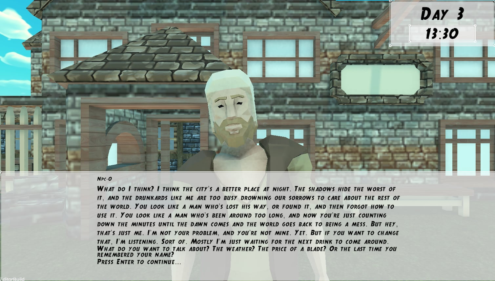
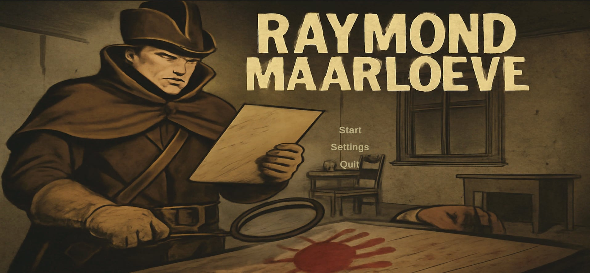

|
Raymond Maarloeve
|
|
Raymond Maarloeve
|
 |  |
Full project documentation is available at:
🔗 https://raymondmaarloeve.github.io/RaymondMaarloeve/
🔻 We have added a launcher for the game, available at:
🔗 https://github.com/RaymondMaarloeve/RaymondMaarloeveLauncher
All instructions related to the launcher can be found on that page.
🧠 We have also created a separate repository for the server responsible for handling our LLMs:
🔗 https://github.com/RaymondMaarloeve/LLMServer
The project we are working on is a computer game in which artificial intelligence (AI) plays a key role. Its main feature is a dynamic world where non-player characters (NPCs) have their own personalities, daily schedules, and the ability to react to player actions. Thanks to AI, each gameplay session is unique, and NPC behavior influences both the storyline and the player's decisions.
What sets this game apart is the lack of traditional, rigid scripting for events. Instead, the game world develops organically, and interactions between NPCs and the player determine the course of the detective investigation, which is the central element of the gameplay. Procedurally generated environments and complex NPC decision-making systems make each game session a unique experience.
Whether you're on Windows or Linux, the game runs seamlessly, so you can enjoy the experience regardless of your operating system.
The main goal of the project’s development is to improve the LLM system through collaboration with the PG server.
Additionally, some minor gameplay improvements and fixes are planned.
The server will primarily be used to train the model, but it will also serve as a platform for running more powerful models during testing.
A more advanced model will be chosen for the narrator to reduce story generation errors.
A new mechanism for generating a chronological timeline of events on the day of the crime will be added.
This will make the investigation and fact-connecting process more engaging for the player.
Furthermore, the murderer will be forced to lie, introducing the need for comparing facts and testimonies.
The final minigame system will be redesigned.
Currently, solving the case involves selecting correct facts and identifying the killer.
In this new version, the player will have to verbally describe the sequence of events and convince the LLM who the murderer is during a dialogue.
The launcher’s functionality will be moved into the in-game menu.
From the menu, players will be able to download models and define NPC personalities.
The game will be published on a selected gaming platform.